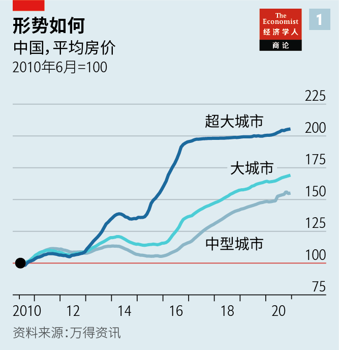

2021-02-07T14:30:20+00:00
中国的房市
胜利大逃亡
长期被视为泡沫的中国房地产市场现在看似稳定。这能维持吗？

中奖一般都是赢钱。在中国，大奖是准你花钱。对位置优越的新房需求高涨，而供应十分有限，于是有些城市用摇号的方式来分配购房名额，摇中几率有时低至六十分之一。上海一位陈姓工程师在摇中之后，只有两分钟时间来决定是否要花960万元买房。“我的银行帐户都掏空了。但我没犹豫。”他说。杭州38岁的商人杨洋（音译）三次摇号未中后，去年春天总算中了一次。“比考大学的时候还紧张。”他说笑道。
就连获得摇号资格也是一种运气，因为参加摇号的人必须在这些蓬勃发展的城市有本地户口，有这样的户口就站到了中国贫富差距鸿沟有利的那一边。相比之下，中国大部分地区的情况正相反：公寓楼建设过度，经济发展无力，买房者寥寥无几。毗邻俄罗斯的小城鹤岗曾一度引起关注——那里有房屋广告标价两万元一套，还不到上海一平米的价格。这是许多小城市空置房过剩的一个极端例子。
大城市房价高企，小城镇房价低迷，类似的两极分化在世界各地都很常见。但由于市场规模巨大且快速增长，中国的房价差异更是被成倍地放大了。因此，要弄清楚中国经济的动向，理解房地产这个部门至关重要。中国每年新开工建设约1500万套房，是美国和欧洲加起来的五倍还多。房地产业（包括直接关联的建筑业和从混凝土到窗帘等所有间接关联的行业）占中国GDP的比重达四分之一。它在金融方面的影响也很深远。评级机构穆迪（Moody's）的数据显示，2021年，中国开发商要偿付的到期债券超过1000亿美元。全球非金融客户的未偿还银行贷款中，约有十分之一发放到了中国的房地产市场，要么为开发商提供融资，要么为购房者提供抵押贷款。
一个常见观点认为，所有这些加在一起构成了一枚定时炸弹。有些事实令人担忧。一项被广泛引用的调查发现中国有足足五分之一的房屋空置。每年的住房投资相当于GDP的十分之一，高于日本在30年前泡沫破灭之前达到的惊人水平。购房者和开发商的债务双双飙升。中国最大的开发商恒大的贷款高达1200亿美元，仅过去十年就增长了56倍。
但是，必须指出这种担忧并不是新鲜事。早在2009年，对冲基金经理吉姆·查诺斯（Jim Chanos）就表示，中国就像是“打了激素的迪拜”，他预测中国的房地产业将会轰然崩塌。自那以来，房价已经翻了一番，建好的房子够2.5亿人居住。房地产市场的持续繁荣表明这个市场并不是泡沫这个词能简单概括的。
对何以能取得这种成功（或者换个说法，就是市场没有崩盘）的主要解释是，为了防止泡沫破灭的预言成真施行了一系列盘根错节的法规。有些法规由来已久，例如要求房贷首付比例至少三成。既然为买房已经投入了这么多，房主就有足够的动力坚持每月还贷，从而限制了堕入违约、拍卖和价格下跌这种恶性循环的风险。在人口密度最高的很多城市，需求也受到严格限制，因为本地户口是购房的先决条件。
随着房地产业的膨胀，政府承诺发展所谓的“长效机制”来稳定价格和投资。政府认为，房地产市场太过重要，不能单由市场来决定其发展。在实践中，这意味着层层加码的规定越来越多。上海和杭州等城市开始要求开发商对新房实行摇号认购，优先供首次购房者购买。其他许多城市几乎完全禁止购买第二套房。这些规定往往引发猫鼠游戏。由于对购买第二套房的限制针对家庭而非个人，一些夫妻为了再买一套房而假离婚。1月21日，上海规定，如果婚内已有一套房，夫妻离异后要等三年才能算首次购房者。
政府现在也开始约束那些负债最多的房地产公司。去年底，人行和住建部表示将开始根据“三条红线”来评估开发商的杠杆率，其中一条是它们的负债不应超过资产的70％。咨询公司Plenum称，最大的100家开发商中只有11家未触及全部三条红线。其他公司需要想办法退到红线以内，否则未来将面临严格的融资限制。
由此生成的局面可以用作研究案例，来观察监管是如何改变市场形态的。一些开发商正努力通过吸引新投资者或分拆子公司（例如物业管理部门）的方式来降低杠杆率。但对许多公司来说，显而易见的第一步是更快更多地卖房以增加现金流，于是它们开始降价。
富力是感觉到政策收紧压力的大型开发商之一。它在南部省份广东的江门市的一个新开发项目近几个月已将价格下调了20％。一度缓慢的销售已经猛增，平均每天约售出15套房。即使是在工作日的下午，也不断有潜在客户小心翼翼地绕开建筑垃圾，查看还在建造中的楼盘。一位留着韩国流行偶像发型的销售夸耀，光是他一个人在12月卖掉的房子总价就达1800万，即便如此，他在同事中也只排名第三。
平静的表面之下
从狭隘的视角看，使用这么多干预措施奏效了。扣除通胀因素后，过去四年最大城市的房价走势基本持平。同期，全国房地产年销售量一直保持在相同水平，而新开工建设面积与销售面积走势基本一致。在小城镇拆除老旧房屋并给业主现金购买新房的做法帮助清理了当地的库存商品房。以当前的销售速度，清掉所有库存大约只需十个月。“房地产行业确实比以前更健康。政府现在手段很多。”广州暨南大学的张思思说。
但这种平稳引发了另一种担忧。种种规定不仅仅是让市场变得更健康了，它们实际上塑造了市场。以稳定价格为例。开发商在大城市通过拍卖拿到土地后，必须在政府规定的范围内为自己的楼盘定价。一个不合理的结果就是，在同一地段新房价格可能比二手房还便宜三分之一。为此又出台了另一条规定：为防止人们转售新房以获得可观利润，一些大城市要求在买房后五年之内转让的业主缴纳一大笔惩罚性税费。与此同时，摇号起到了配额的作用，限定了市场规模。房价可能得到了控制，但大量需求却没得到满足。
从这个高度看，平静下来的市场开始不再像一个成功故事，而更像一口高压锅。于是又一项干预措施应运而生：官员们试图通过引导人们移居较小城镇（特别是在大都市外围兴建的卫星城镇群）来给最大城市这口锅放气减压。这些城镇通过高铁与大城市相连，但对新移民的落户门槛要低得多。为了让这些卫星城更具吸引力，政府也对医院和学校加大了投资。“有时候，要解决房地产市场中的问题得让教育部来，而不是住建部。”张思思说。
开发商似乎正在响应这一政策推动。最适合发展城市集群的地方是四个繁荣的沿海省份（广东、福建、浙江和江苏）。去年，这四省占中国房地产投资总额的34%，十年前是26％。开发商“不再是在全国随便一个地方大块买地了，”咨询公司克而瑞的肖文晓说，“现在，它们盯着黄金地段的小块土地。”换句话说，中国的新房流动似乎比股市更合理。
那么关键问题就是，中国的住房存量还有多大的增长空间。西南财经大学在2017年开展的一项备受推崇的调查显示住房空置率为22％，这么看来市场已经处于过饱和状态。中国的人口结构也显示需求在减弱。作为购房主力军的劳动年龄人口已经在减少。而农村人口向城市迁移（城市住房的另一大需求来源）的速度也已开始放缓。
但中国的房地产市场可没那么简单。22％的空置率在很大程度上反映的是小城镇房地产开发过度。投行中金公司的数据显示，大城市及其周边的空置率可能不到10％，按照国际标准来看是低的。多数存量房仍然很破旧。城市里有十分之一的住房没有独立卫生间。在不断壮大的中产阶级中，有许多人去年因为封城在家待了很久，现在决定要买更大一点的房子。
综合上述所有因素，中国最大的房地产研究机构中国指数研究院给出的基准预测是，未来五年房屋销量每年将以约4％的速度下降，从2020年的售出约1500万套下降至2025年的1300万套。这对中国将是一个挑战，因为长期都是增长支柱之一的房地产将变成一个拖累。而同时，曾经疯狂的楼市将面临的是逐渐下滑，而非崩盘。竖起耳朵仔细听，定时炸弹的滴答声似乎微弱了一些。
2021-02-07T14:30:20+00:00
China’s property market
The great escape
Long seen as a bubble, China’s housing market now looks stable. Can that hold?

LOTTERY WINNERS normally win money. In China the big prize is being allowed to spend it. Demand for new homes in good locations is so high, and supply so limited, that several cities use lotteries to allocate them, some with odds as low as one in 60. When his number was chosen, John Chen, an engineer in Shanghai, had two minutes to decide whether to drop 9.6m yuan ($1.5m) on a house. “It emptied my bank account. But I did not hesitate,” he says. Yang Yang, a 38-year-old businessman in Hangzhou, lost out in three draws before finally winning one last spring. “It was even more nerve-racking than my university entrance exams,” he jokes.
Even being able to enter the housing lotteries is a matter of good luck, because entrants must be registered as residents of the booming cities, which places them on the right side of China’s wealth gap. By contrast, large swathes of the country have the opposite problem: overbuilt apartment blocks, sputtering economies and few people buying property. Hegang, a town near the border with Russia, briefly found itself in the spotlight after homes there were advertised for just 20,000 yuan, less than the cost of a square metre in Shanghai. It was an extreme example of the glut of empty homes in many small towns.
Similar splits are common around the world, with prices high in large cities and low in small towns. But the degree of the divergence in China, multiplied by the sheer size and growth of its market, means that understanding property is essential if you want to get to grips with what is happening in the economy. Every year China starts building about 15m new homes, more than quintuple the amount in America and Europe combined. The property sector—both the direct impact of construction and its indirect effect on everything from concrete to curtains—makes up a quarter of China’s GDP. The financial implications are profound, too. In 2021 Chinese developers are on the hook for more than $100bn in bond repayments, according to Moody’s, a rating agency. For the world as a whole, roughly a tenth of outstanding bank loans to non-financial clients have gone to China’s property sector, whether as financing for developers or mortgages for homebuyers.
One commonly heard view is that all this adds up to a ticking time-bomb. And some of the facts are alarming. Fully one-fifth of Chinese homes are vacant, finds a widely cited survey. Housing investment equates to about a tenth of GDP annually, higher than the prodigious levels reached in Japan before its bubble popped three decades ago. Debt has soared for buyers and builders alike. Evergrande, China’s biggest developer, has borrowed a cool $120bn, a 56-fold increase in the past decade alone.
Yet it is only fair to note that such concerns are nothing new. As far back as 2009 Jim Chanos, a hedge-fund manager, said China was “Dubai on steroids”, predicting that its property sector would implode spectacularly. Since then prices have doubled, and enough homes have been built for 250m people. The longevity of the boom suggests that the market is more complex than its depictions as a bubble suggest.
The main explanation for its success—or, put differently, its failure to collapse—is the skein of regulations aimed at forestalling the prophesies of doom. Some have long been in place, such as the rule that down-payments for mortgages must be at least 30% of the purchase price for a home. With so much equity in their houses, homeowners are strongly incentivised to make their monthly mortgage payments, limiting the risk of a vicious cycle of defaults, forced sales and collapsing prices. In many of the most populous cities demand is also tightly restricted, because a
As the property sector has swollen, the government has pledged to develop what it calls “a long-term mechanism” for stabilising prices and investment. The property market is, in its view, too important to be left to the market alone. In practice this has meant layering on ever more rules. Cities such as Shanghai and Hangzhou started requiring developers to run lotteries for new flats, with priority given to people who do not own homes. Many others have all but barred people from buying second homes. These often make for cat-and-mouse games. Since the second-home ban applies to families, not just individuals, some couples have obtained fake divorces in order to buy another house. On January 21st Shanghai ruled that divorcees must wait three years to count as first-time buyers if they had owned a home when married.
The government is also now reining in the most indebted real-estate firms. Late last year the central bank and the housing ministry said they would start assessing developers’ leverage on the basis of “three red lines”—one, for example, is that their liabilities should not exceed 70% of their assets. Only 11 of the biggest 100 developers would be given a passing grade on all three measures, according to Plenum, a consultancy. The others need to find a way to get inside the lines; if not, they will face strict caps on future financing.
The resulting dynamic offers a case study in how regulation changes the shape of the market. Some developers are working to pare their leverage by attracting new investors or by spinning off subsidiaries, such as their property-management arms. For many, though, the obvious first step is to boost cashflow by selling more houses more quickly, leading them to cut prices.
R&F is one of the big developers feeling the pinch. At one of its new developments in Jiangmen, a city in the southern province of Guangdong, it has cut prices by 20% in recent months. Sales, once slow, have soared—averaging about 15 homes per day. Even on a weekday afternoon a steady flow of prospective customers walks gingerly around construction debris to check out the flats still being built. One agent, his hair coiffed like a South Korean pop idol, boasts that he alone sold 18m yuan worth of units in December, though that was only enough to rank third among his colleagues.
Beneath the placid surface
Viewed narrowly, the many interventions have worked. In the biggest cities prices have basically been flat in inflation-adjusted terms over the past four years. Annual property sales nationwide have remained at the same level during that time, while new starts have been broadly in line with sales. A scheme to demolish old rickety homes and give their owners cash to buy new ones helped mop up unsold units in small towns. It would take just about ten months to clear all inventory at the current sales rate. “The property sector really is healthier than it used to be. The government has so many levers now,” says Zhang Sisi of Jinan University in Guangzhou.
But this calm engenders a different kind of concern. The many rules have not just made for a healthier market; they have made the market. Take the price stability. When developers win land auctions in big cities, they must set prices within a range prescribed by the government. A perverse outcome is that new homes can be a third cheaper than second-hand ones in the same neighbourhoods. Hence yet another rule: to stop people flipping their new homes for a tidy profit, several major cities have slapped a penalty on owners who sell within five years of buying. The lotteries, meanwhile, act as quotas to dictate the size of the market. Prices may be under control, but much demand is simply going unmet.
From this vantage, the becalmed market begins to look less like a success story and more like a pressure cooker. So in yet another intervention, officials are trying to let steam out of the biggest cities by guiding people to smaller ones—specifically, in the clusters of satellite towns being built up just outside metropolises. These towns are linked to the cities by high-speed trains but have much lower thresholds for newcomers wanting a
Developers seem to be responding to this policy push. The most fertile ground for the city clusters are four prosperous coastal provinces (Guangdong, Fujian, Zhejiang and Jiangsu). Last year these made up 34% of all property investment in China, compared with 26% a decade ago. Developers are “no longer buying up big parcels of land anywhere in the country”, says Xiao Wenxiao of CRIC Research, a consultancy. “Now they are focusing on smaller plots in prime areas.” The flow of new homes in China, in other words, appears to be better situated than the stock.
A key question, then, is just how much scope there still is for China’s housing stock to grow. A 22% vacancy rate—the result of a well-respected survey by the Southwestern University of Finance and Economics in 2017—would suggest that the market is more than saturated. China’s demographics also point to weakening demand. The working-age population, the cohort that buys the most homes, is already shrinking. And the pace of rural-to-urban migration, another big source of demand in cities, has started to slow, too.
Nothing about the Chinese housing market is ever so straightforward, though. The 22% vacancy rate largely reflects the overbuilding of small towns. In and around big cities vacancy rates may be less than 10%, low by international standards, according to China International Capital Corp, an investment bank. Much of the housing stock is still shabby. A tenth of flats in cities do not include their own toilet. And many among the growing middle class, having spent a good portion of the past year locked down, are deciding that they want slightly larger homes.
Totting this all up, the baseline forecast of China Index Academy, the country’s largest property-research organisation, is that housing sales will fall by 4% or so annually in the coming half-decade, going from roughly 15m units sold in 2020 to 13m in 2025. That would be a challenge for China; long a pillar of growth, the property sector would become a drag. At the same time, it would be a gradual slope down, not a collapse, for the once-vertiginous market. If you listen closely enough, the ticking of the time-bomb sounds a little fainter. ■
2021-02-07T14:30:20+00:00
中國的房市
勝利大逃亡
長期被視為泡沫的中國房地產市場現在看似穩定。這能維持嗎？
中獎一般都是贏錢。在中國，大獎是准你花錢。對位置優越的新房需求高漲，而供應十分有限，於是有些城市用搖號的方式來分配購房名額，搖中幾率有時低至六十分之一。上海一位陳姓工程師在搖中之後，只有兩分鐘時間來決定是否要花960萬元買房。“我的銀行帳戶都掏空了。但我沒猶豫。”他說。杭州38歲的商人楊洋（音譯）三次搖號未中後，去年春天總算中了一次。“比考大學的時候還緊張。”他說笑道。
就連獲得搖號資格也是一種運氣，因為參加搖號的人必須在這些蓬勃發展的城市有本地戶口，有這樣的戶口就站到了中國貧富差距鴻溝有利的那一邊。相比之下，中國大部分地區的情況正相反：公寓樓建設過度，經濟發展無力，買房者寥寥無幾。毗鄰俄羅斯的小城鶴崗曾一度引起關注——那裡有房屋廣告標價兩萬元一套，還不到上海一平米的價格。這是許多小城市空置房過剩的一個極端例子。
大城市房價高企，小城鎮房價低迷，類似的兩極分化在世界各地都很常見。但由於市場規模巨大且快速增長，中國的房價差異更是被成倍地放大了。因此，要弄清楚中國經濟的動向，理解房地產這個部門至關重要。中國每年新開工建設約1500萬套房，是美國和歐洲加起來的五倍還多。房地產業（包括直接關聯的建築業和從混凝土到窗帘等所有間接關聯的行業）佔中國GDP的比重達四分之一。它在金融方面的影響也很深遠。評級機構穆迪（Moody's）的數據顯示，2021年，中國開發商要償付的到期債券超過1000億美元。全球非金融客戶的未償還銀行貸款中，約有十分之一發放到了中國的房地產市場，要麼為開發商提供融資，要麼為購房者提供抵押貸款。
一個常見觀點認為，所有這些加在一起構成了一枚定時炸彈。有些事實令人擔憂。一項被廣泛引用的調查發現中國有足足五分之一的房屋空置。每年的住房投資相當於GDP的十分之一，高於日本在30年前泡沫破滅之前達到的驚人水平。購房者和開發商的債務雙雙飆升。中國最大的開發商恆大的貸款高達1200億美元，僅過去十年就增長了56倍。
但是，必須指出這種擔憂並不是新鮮事。早在2009年，對沖基金經理吉姆·查諾斯（Jim Chanos）就表示，中國就像是“打了激素的迪拜”，他預測中國的房地產業將會轟然崩塌。自那以來，房價已經翻了一番，建好的房子夠2.5億人居住。房地產市場的持續繁榮表明這個市場並不是泡沫這個詞能簡單概括的。
對何以能取得這種成功（或者換個說法，就是市場沒有崩盤）的主要解釋是，為了防止泡沫破滅的預言成真施行了一系列盤根錯節的法規。有些法規由來已久，例如要求房貸首付比例至少三成。既然為買房已經投入了這麼多，房主就有足夠的動力堅持每月還貸，從而限制了墮入違約、拍賣和價格下跌這種惡性循環的風險。在人口密度最高的很多城市，需求也受到嚴格限制，因為本地戶口是購房的先決條件。
隨着房地產業的膨脹，政府承諾發展所謂的“長效機制”來穩定價格和投資。政府認為，房地產市場太過重要，不能單由市場來決定其發展。在實踐中，這意味着層層加碼的規定越來越多。上海和杭州等城市開始要求開發商對新房實行搖號認購，優先供首次購房者購買。其他許多城市幾乎完全禁止購買第二套房。這些規定往往引發貓鼠遊戲。由於對購買第二套房的限制針對家庭而非個人，一些夫妻為了再買一套房而假離婚。1月21日，上海規定，如果婚內已有一套房，夫妻離異後要等三年才能算首次購房者。
政府現在也開始約束那些負債最多的房地產公司。去年底，人行和住建部表示將開始根據“三條紅線”來評估開發商的槓桿率，其中一條是它們的負債不應超過資產的70％。諮詢公司Plenum稱，最大的100家開發商中只有11家未觸及全部三條紅線。其他公司需要想辦法退到紅線以內，否則未來將面臨嚴格的融資限制。
由此生成的局面可以用作研究案例，來觀察監管是如何改變市場形態的。一些開發商正努力通過吸引新投資者或分拆子公司（例如物業管理部門）的方式來降低槓桿率。但對許多公司來說，顯而易見的第一步是更快更多地賣房以增加現金流，於是它們開始降價。
富力是感覺到政策收緊壓力的大型開發商之一。它在南部省份廣東的江門市的一個新開發項目近幾個月已將價格下調了20％。一度緩慢的銷售已經猛增，平均每天約售出15套房。即使是在工作日的下午，也不斷有潛在客戶小心翼翼地繞開建築垃圾，查看還在建造中的樓盤。一位留着韓國流行偶像髮型的銷售誇耀，光是他一個人在12月賣掉的房子總價就達1800萬，即便如此，他在同事中也只排名第三。
平靜的表面之下
從狹隘的視角看，使用這麼多干預措施奏效了。扣除通脹因素後，過去四年最大城市的房價走勢基本持平。同期，全國房地產年銷售量一直保持在相同水平，而新開工建設面積與銷售面積走勢基本一致。在小城鎮拆除老舊房屋並給業主現金購買新房的做法幫助清理了當地的庫存商品房。以當前的銷售速度，清掉所有庫存大約只需十個月。“房地產行業確實比以前更健康。政府現在手段很多。”廣州暨南大學的張思思說。
但這種平穩引發了另一種擔憂。種種規定不僅僅是讓市場變得更健康了，它們實際上塑造了市場。以穩定價格為例。開發商在大城市通過拍賣拿到土地後，必須在政府規定的範圍內為自己的樓盤定價。一個不合理的結果就是，在同一地段新房價格可能比二手房還便宜三分之一。為此又出台了另一條規定：為防止人們轉售新房以獲得可觀利潤，一些大城市要求在買房後五年之內轉讓的業主繳納一大筆懲罰性稅費。與此同時，搖號起到了配額的作用，限定了市場規模。房價可能得到了控制，但大量需求卻沒得到滿足。
從這個高度看，平靜下來的市場開始不再像一個成功故事，而更像一口高壓鍋。於是又一項干預措施應運而生：官員們試圖通過引導人們移居較小城鎮（特別是在大都市外圍興建的衛星城鎮群）來給最大城市這口鍋放氣減壓。這些城鎮通過高鐵與大城市相連，但對新移民的落戶門檻要低得多。為了讓這些衛星城更具吸引力，政府也對醫院和學校加大了投資。“有時候，要解決房地產市場中的問題得讓教育部來，而不是住建部。”張思思說。
開發商似乎正在響應這一政策推動。最適合發展城市集群的地方是四個繁榮的沿海省份（廣東、福建、浙江和江蘇）。去年，這四省佔中國房地產投資總額的34%，十年前是26％。開發商“不再是在全國隨便一個地方大塊買地了，”諮詢公司克而瑞的肖文曉說，“現在，它們盯着黃金地段的小塊土地。”換句話說，中國的新房流動似乎比股市更合理。
那麼關鍵問題就是，中國的住房存量還有多大的增長空間。西南財經大學在2017年開展的一項備受推崇的調查顯示住房空置率為22％，這麼看來市場已經處於過飽和狀態。中國的人口結構也顯示需求在減弱。作為購房主力軍的勞動年齡人口已經在減少。而農村人口向城市遷移（城市住房的另一大需求來源）的速度也已開始放緩。
但中國的房地產市場可沒那麼簡單。22％的空置率在很大程度上反映的是小城鎮房地產開發過度。投行中金公司的數據顯示，大城市及其周邊的空置率可能不到10％，按照國際標準來看是低的。多數存量房仍然很破舊。城市裡有十分之一的住房沒有獨立衛生間。在不斷壯大的中產階級中，有許多人去年因為封城在家待了很久，現在決定要買更大一點的房子。
綜合上述所有因素，中國最大的房地產研究機構中國指數研究院給出的基準預測是，未來五年房屋銷量每年將以約4％的速度下降，從2020年的售出約1500萬套下降至2025年的1300萬套。這對中國將是一個挑戰，因為長期都是增長支柱之一的房地產將變成一個拖累。而同時，曾經瘋狂的樓市將面臨的是逐漸下滑，而非崩盤。豎起耳朵仔細聽，定時炸彈的滴答聲似乎微弱了一些。